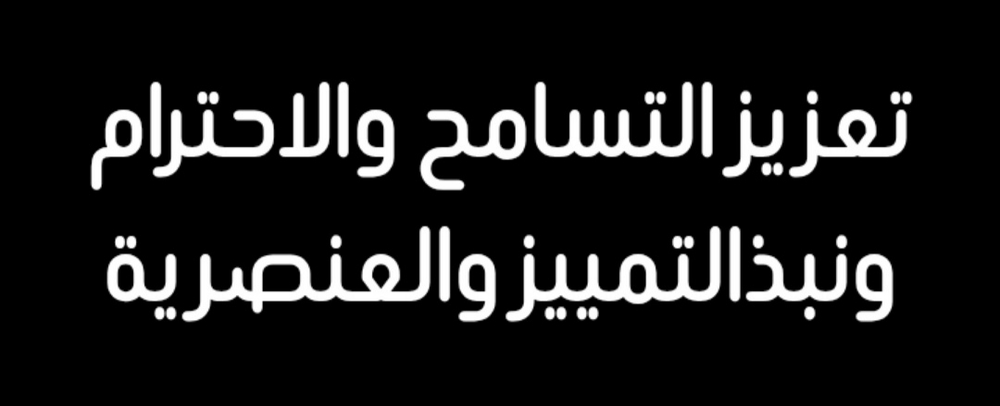
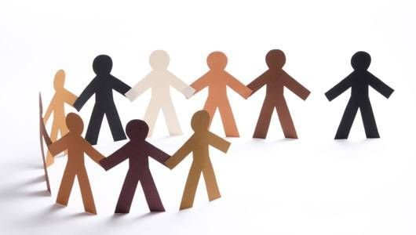

الفكرة الرئيسية هي : بناء مجتمعات متماسكة ومزدهرة قائمة على العدل والمساواة واحترام الكرامة الإنسانية لجميع الأفراد بغض النظر عن أخلاقهم.
التسامح :
هو قبول الأخرين واحترام الآخرين (فكرياً، دينياً، عرقياً) وعدم إيذاء الآخرين وهو سلوك يتجاوز العفو عن الأخطاء ليصبح إلتزاماً.
أهمية التسامح :
- للفرد : يمنح السعادة والراحة النفسية ويخلص من الشعور بالذنب ويحسن العلاقات.
- للمجتمع : يحقق الوحدة التضامن يقضي على الصراعات ويعزز التعايش السلمي وينشئ مجتمعاً متماسكاً.
الإحترام :
هو تقدير قيمة الانسان او الشيء لقبول الاخرين كما هم في الاختلافات معاملتهم بلطف وتوقيرهم والاعتراف بحقوقهم وكرامتهم
أهمية الإحترام:
- يبني الثقة
- يعزز العلاقات الشخصية
- يقلل النزاعات
- يشعر الأفراد بالتقدير والانتماء في المجتمع والعمل
- يقوي الروابط والعلاقات
- يشجع التعاون والإنتاجية
نبذ التمييز : 
هو مبدأ عنصري وأخلاقي أساسه ضمان معاملة جميع الأفراد على قدم المساواة
أهمية نبذ التمييز:
- تعزيز العدالة والمساواة
- حماية حقوق الإنسان
- تطوير الأخلاق والقيم
- بناء مجتمعات متماسكة
- تحقيق التنمية المستدامة
- تجنب الصراعات والاضطرابات
العنصرية : 
هي الأعتقاد بتفوق عرق أو جنس على آخر مما يبرر التمييز في المعاملات السياسية والاجتماعية والقانونية.
الواجب علينا تجاه العنصرية :
- الوعي بالمنطق الشرعي
- حسن القول الفعل
- تجنب الخطاب العنصري
عمل الطالب منيب علي زكريا 108
قيمني